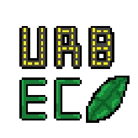

Simulação urbana • acesso antecipado
Construa.
Decida.
Transforme.
No Urb.Eco, cada escolha tem consequências. Planeje seus recursos, equilibre a economia, desenvolva sua insfraestrutura e enfrente os desfios que surgem pelo caminhho. O futuro da cidade está nas suas mãos
2DPixel art
∞Possibilidades
100%Estratégia
Urb.Eco● AÇÃO E REAÇÃO
